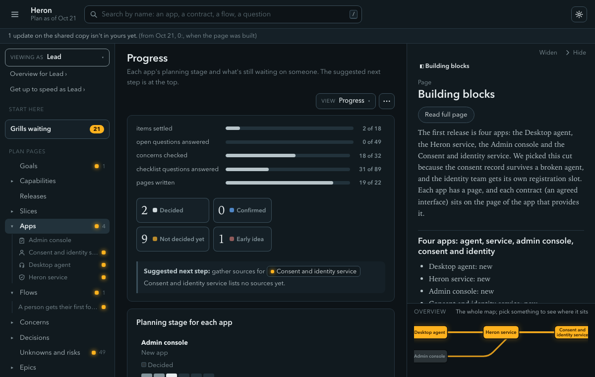
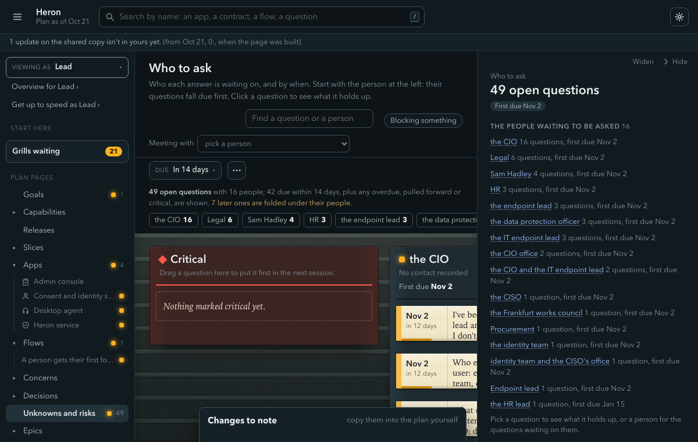

InklingA hunch
Something someone suspects, with nothing behind it yet. Anyone can set it, in a dump or an import. It moves to assumption when shape, boundary or requirements pick it up.
Most plans state everything in one flat voice. "The app syncs every hour" might be a measurement, a belief, a hope or a decision, and three months later even the author can't tell. In vela, certainty is a field on every item.
Items move only along the arrows. Nothing goes from assumption to fact because someone sounded sure, and nothing goes to decided without a grill.
Something someone suspects, with nothing behind it yet. Anyone can set it, in a dump or an import. It moves to assumption when shape, boundary or requirements pick it up.
The working belief. Shape, boundary, requirements, allocate and releases write at this level at most. Any line from a plan, deck or roadmap lands here, however sure it sounds.
It moves to fact when discover finds a registered source, or to decided when a grill gets the lead's yes.
Something a registered source says, and the page names it. Only discover or import can set it, from a source whose kind is exists. Claude's general knowledge is never a source. It moves to decided in a grill.
It came out of a grill with the lead's explicit yes, and their reason is written beside it. Only a grill sets it. A challenge or a change of mind can reopen it back to assumption (vela decide --reopen), and the move is written in the session's Changes table.
An open question with an owner, an ask-by date when one was agreed, and a list of what it holds up. Any session can file one with vela add unknown. While open, it blocks what it holds up from being decided. Answered, it is resolved with its answer and source, which lets the item move.
Stated in Certainty and sources and the table of what each session may write in MODES.md. Enforced by E303, E316, E317 (rules.py) and vela decide --reopen. Pinned by test_gates.py, test_decide.py, test_items.py.
A decision is where responsibility changes hands. If any session could write decided, the word would mean "someone in a hurry typed it." A grill has a fixed shape: one question at a time, a recommended answer kept under pushback, a read-back and an explicit yes. A decision also keeps its why, in the lead's own words, so six months later someone who wasn't there can see what was decided, in which session, and why.
- **Decision:** [[2026-10-19-tracer-slice-first-path]]
- **Why:** Out of hours is a service desk constraint anyway, and they're eight to six with no cover—doesn't change what the console is.Stated in Certainty and sources. Enforced by E303, E317 and W390 for a decision with no why (rules.py). Pinned by test_why.py and test_gates.py. The reasons for each rule are vela's own design reasoning.
Without sources, plans fill up with "everyone knows" statements nobody can check. The Library records each source's kind, owner, date and where it lives, and shows "newer version out" when the source's owner has been told of one.
Two companion rules. Disputes are unknowns: when two sources disagree, vela writes one question naming both and doesn't pick. The demo plan's tenant note says staff can't install software, while the CIO brief says they install the helper themselves. State a value once: the page that owns a number states it, and others link to it, because copies drift and links don't.
Stated in Certainty and sources. Enforced by vela apply and E307, E308, E313 (rules.py). Pinned by test_apply_marks.py and test_library_register.py.
A question with no owner is a hope. An unknown names the lead who chases it, who is asked, what it holds up, and an ask-by date when one was agreed. Claude proposes the person and date with a reason and waits for the lead's yes. It never picks a date itself and never drafts the email for you to send.
The question below blocks a requirement and the release, so neither can be marked decided until it's answered, or the lead overrides the block and says so.
### UNK-093 Can clients opt in to Heron
Heron summarizes a call only when every participant has opted in, and a client contact isn't Marlowe staff. ...
- **Owner:** @sim-lead
- **Ask:** Legal
- **Opened:** 2026-10-19
- **State:** open
- **Ask by:** 2026-11-02
- **Blocks:** [[CAP-023-opt-in-to-heron-and-take-it-back#CAP-023.FR1 Summarize only fully opted-in calls|Summarize only fully opted-in calls]], [[04b-releases#Release one: February pilot, Client Delivery London|February pilot]]Stated in Questions and the ledger and the Unknowns section of MODES.md. Enforced by vela add unknown, which won't file a date the lead's words don't back. Pinned by test_apply_add.py and test_ledger.py.
A rule that can't be broken pushes people to work around the tool, which is worse than breaking the rule in the open. So the person using vela may override any rule. Claude says once what the rule protects, does what they asked, and writes an **Override:** line on the item: the rule, their handle, the date, an end date where the rule stays true until someone acts, and the reason in their words. vela check turns the matching error into a warning that quotes it, and an expired override is an error again (E398).
If the lead decides for someone absent, the page says **Decided by:** @lead, on behalf of @owner until that person confirms or challenges. The demo plan's Desktop agent was handed over before its contracts were decided, because "the team can't sit idle while the contracts are decided." Both lines are on the page.
Stated in Overrides and the "user can override" rule in START.md. Enforced by E321, E322, E398, W323, W324 (override.py). Pinned by test_override.py and test_override_until.py.
The Progress view counts every app's items by state. On the demo plan, built October 21, 2026: 2 decided, 0 confirmed, 9 not decided yet, 1 early idea, and "open questions answered: 0 of 49." The "Who to ask" view groups those 49 questions by who holds the answer, with due dates.


Stated in Progress and next step and the README. Enforced by the grid behind vela status. Pinned by test_progress.py, test_render.py, test_question_views.py.